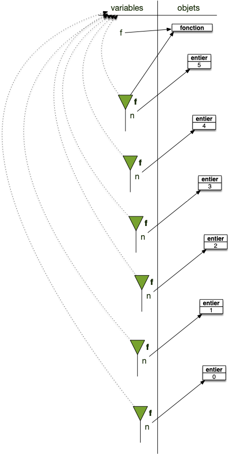

Espace de nommage
Nous avons déjà abordé la notion d'espace de nommage lorsque :
- on a paré de modules : l'espace de nommage du module et accès aux éléments via la notation pointée
- on a parlé des fonctions : l'espace de nommage et fonctions
Les espaces de nommage permettent de lier variables et objets :
- on considère que les objets sont stockés dans l'espace des objets : cet espace est unique
- on accède aux objets via leurs noms, eux même stockés dans des espaces de nommage qui sont des objets comme les autres : il y en a de nombreux.
Pour chaque espace de nommage :
- il ne peut y avoir 2 noms identiques
- à chaque nom est associé un objet
- certains espaces de noms possèdent un parent qui sera utilisé pour retrouver un nom.
De façon formelle :
Définition
Un espace de nommage est constitué de deux parties :
- une table de correspondance (un dictionnaire) associant des noms (les clés) à des objets (les valeurs).
- un lien vers un espace de nommage parent (qui peut être vide)
Par exemple les espaces de nommages associés aux modules on par exemple un parent vide et ceux créés par les fonctions dépendant de l'espace de nommage qui les a appelé.
À retenir
Les espaces de nommages sont utilisés à de nombreux endroits dans python et sont là pour :
- gérer les noms et leurs objets associés
- séparer les responsabilités et cloisonner les noms auxquels ont accès les différentes parties d'un programme
On accède aux noms (et donc aux objets qu'ils référencent) des espaces de noms d'un objet en utilisant la notation pointée :
Définition
Le notation pointée permet d'accéder aux noms d'un espace de nommage. Si o est un objet contenant un espace de nom on peut :
- accéder à un nom
ndéfini dans l'espace un nom deoavec l'instructiono.n(si on a importé le module random on peut utiliser la fonctionrandrangequi y est défini avec l'instructionrandom.randrange(1, 7)). - affecter un nom
ndans l'espace un nom deoavec l'instructiono.n = <objet>(par exempleo.n = 42).
Avant de détailler ce mécanisme et voir ses différentes implications, commençons par rappeler ce qu'est un nom et un objet pour python.
Rappel sur les variables et les objets
Commençons par quelques rappels et précisions sur les variables et leurs liens avec les objets :
- tout ce que manipule un programme est appelé objet.
- les variables sont des noms via lesquels on accède aux objets. On dit aussi parfois qu'une variable est une référence à un objet.
À retenir
Pour qu'un programme objet fonctionne, on a besoin de deux mécanismes :
- un moyen de stocker des données et de les manipuler (les objets et leurs méthodes)
- un moyen d'y accéder (les variables)
Objets
Un objet est une structure de donnée générique permettant de gérer tout ce dont à besoin un programme :
- des données
- des fonctions
- des modules
- ...
À retenir
Tout est objet dans un langage objet.
Variables
Les variables sont des références aux objets. Pour ce faire, on utilise l’opérateur d’affectation = :
variable = objetA gauche de l’opérateur = se trouve une variable (en gros, quelque chose ne pouvant commencer par un nombre) et à droite un objet. Dans toute la suite du programme, dès que le programme rencontrera le nom, il le remplacera par l'objet.
À retenir
Une variable n'est pas l'objet, c'est une référence à celui-ci
La variable peut être vue comme un nom de l'objet à ce moment du programme. Un objet pourra avoir plein de noms différents au cours de l'exécution du programme, voire plusieurs noms en même temps.
Pour s'y retrouver et avoir une procédure déterministe pour retrouver les objets associés aux variables, voire choisir parmi plusieurs variables de même nom, elles sont regroupées par ensembles — nommés espaces de noms — hiérarchiquement ordonnés.
Espaces des variables
L'espace des variables peut-être vu comme un espace de nom particulier : c'est celui qui est créé au début de l'exécution de l'interpréteur.
À retenir
Au démarrage d'une exécution d'un programme, l'espace des variables est créé. C'est un espace de nommage sans parent : c'est à partir de lui que toutes les variables doivent être atteintes.
Au départ, cet espace il ne contient rien, à part des variables spéciales (qui ont des noms commençant et finissant par __) utilisées par python. On en verra certaines pendant ce cours, mais ce qu'il faut retenir c'est que ces variables permettent à python de fonctionner. Elles sont mises à disposition des développeurs mais on ne les utilisera jamais dans un usage courant.
Pour voir les noms définis dans l'espace de noms des variables, on utilise en python la fonction globals() qui rend le dictionnaire dont les clés sont les noms des variables et les valeurs les objets associés.
>>> type(globals())
<class 'dict'>
>>> globals().keys()
dict_keys(['__name__', '__doc__', '__package__', '__loader__', '__spec__', '__builtins__'])On voit que des variables existent dès le démarrage de python. Ces variables ne sont pas là pour être utilisées par nous mais sont indispensables au bon fonctionnement de python. Elles existent pour tout espace de nommage et permettent leur bon fonctionnement. En deux mots :
__name__: désigne le nom de l'espace de nommage pour python.- on reverra
__doc__,__package__,__loader__et__spec__lorsque l'on regardera les espaces de noms de modules. Pour l'espace des variables, elles sont non utilisées et valentNone __builtins__est un module et contient toutes les fonctions de python (il contient les nomsprint,input, etc)
Certains langages vont cacher leur fonctionnement interne à l'utilisateur. Ce n'est pas le cas de python qui veut que tout soit explicite : on a accès via ces variables spéciales, appelées dunder et commençant et finissant par deux underscores.
Regardons un peu tout ça
que vaut __main__ dans l'espace des variables ?
corrigé
corrigé
On exécute un interpréteur et on regarde la valeur de sa variable :
❯ python
Python 3.14.3 (main, Feb 3 2026, 15:32:20) [Clang 17.0.0 (clang-1700.6.3.2)] on darwin
Type "help", "copyright", "credits" or "license" for more information.
>>> __name__
'__main__'
Le nom de l'espace des variable est __name__ pour python.
Ajoutons une variable et vérifions qu'elle est bien ajoutée à l'espace des variables :
>>> x = "youhou ! Je suis là !"
>>> globals().keys()
dict_keys(['__name__', '__doc__', '__package__', '__loader__', '__spec__', '__builtins__', 'x'])Notre variable a bien été ajouté à l'espace des noms ! Comme c'est un dictionnaire, on peut y accéder directement :
>>> globals()['x']
'youhou ! Je suis là !'Qui est équivalent à :
>>> print(x)
'youhou ! Je suis là !'Voir même y ajouter directement des variables. La ligne suivante est équivalente à affecter une nouvelle variable y :
>>> globals()['y'] = "je suis un véritable hacker."Vérifions le :
>>> print(y)
je suis un véritable hacker.À retenir
L'espace de variable est l'espace de nommage principal. On doit pouvoir accéder à tous les objets via celui-ci.
Espaces de nommage des modules
On a vu qu'un module contenait un espace de nommage auquel on pouvait accéder via la notation pointée. Tout comme l'espace des variables, cet espace ne contient pas de parent.
Tout comme la fonction globals() permet d'accéder au dictionnaire contenant la table de relation entre variables et objets, il est possible d'accéder au dictionnaire contenant les noms stockés dans l'espace de nommage d'un objet o (en particulier d'un module) en utilisant la fonction vars(o).
Testons cela en regardant si print est dans le module __builtins__ :
>>> 'print' in vars(__builtins__)
TrueOui ! On peut aussi voir toutes les fonction par défaut de python en exécutant par exemple le bout de code suivant (attention, il y en a beaucoup) :
for x in vars(__builtins__):
print(x)Regardons de plus prêt les différentes variables définies dans un module :
Dans un projet vscode créez deux fichiers :
- un fichier
main.pycontenant le code :import mon_module for noms in vars(mon_module).keys(): print(noms) - un fichier
mon_module.pycontenant le code suivant :""" Une documentation de mon module """ une_variable = 42 def une_fonction(): print(une_variable)
Puis exécutez le fichier avec la commande python main.py.
Lorsque vous exécutez le fichier main.py vous devriez voir :
❯ python main.py
__name__
__doc__
__package__
__loader__
__spec__
__builtins__
__file__
__cached__
une_variable
une_fonctionOn retrouve bien :
- les variables spéciales de l'espace de variables (
__name__,__doc__,__packages__.__loader__,__spec__et__builtins__) - deux nouvelles variables :
__file__: qui contient le nom du fichier contenant le module__cached__: qui contient le fichier compilé du module (ce fichier est crée lorsque lors du premier import et accélère les futurs accès)
- notre variable et notre fonction :
une_variableetune_fonction
Que valent les différentes variables spéciales sauf __builtins__ du module mon_module ?
corrigé
corrigé
Le plus simple est d'afficher toutes les variables une à une en ajoutant le code suivant au fichier main.py :
import mon_module
print(vars(mon_module).keys())
print()
for key, value in vars(mon_module).items():
if key != "__builtins__":
print("nom :", key, " valeur :", value)
Son exécution donne :
❯ python main.py
dict_keys(['__name__', '__doc__', '__package__', '__loader__', '__spec__', '__file__', '__cached__', '__builtins__', 'une_variable', 'une_fonction'])
nom : __name__ valeur : mon_module
nom : __doc__ valeur : Une documentation de mon module
nom : __package__ valeur :
nom : __loader__ valeur : <_frozen_importlib_external.SourceFileLoader object at 0x102dab750>
nom : __spec__ valeur : ModuleSpec(name='mon_module', loader=<_frozen_importlib_external.SourceFileLoader object at 0x102dab750>, origin='/Users/fbrucker/Desktop/prog-objet/mon_module.py')
nom : __file__ valeur : /Users/fbrucker/Desktop/prog-objet/mon_module.py
nom : __cached__ valeur : /Users/fbrucker/Desktop/prog-objet/__pycache__/mon_module.cpython-314.pyc
nom : une_variable valeur : 42
nom : une_fonction valeur : <function une_fonction at 0x102e6aa30>
L'exercice précédent vous a montré que :
- le nom du module (
__name__) vaut le nom du fichier et plus__name__. C'est ce qui permet de différentier l'espace des variables de tous les autres espaces de nommage - la variables
__doc__vaut la chaîne de caractères du début du fichier ! C'est le moyen que donne python pour créer l'aide d'un module. Si vous tapez dans un interpréteurhelp(mon_module)après l'avoir importé vous retrouverez cette chaîne de caractères.
Enfin, tout comme l'espace de variable on peut ajouter ou modifier des nom qui y sont définis en utilisant la notation pointée :
import mon_module
mon_module.autre_variable = "quarante-deux"Il est bien sur non conseillé de le faire par ce qu'on peut Tout modifier. Par exemple se conformer à une loi de l'Indiana :
import math
math.pi = 3.2Espaces de nommage courant
L'exécution de fonction nécessite l'utilisation d'espaces de nommages pour compartimenter l'usage des variables.
Définition
L'interpréteur possède à chaque instant un espace de nommage courant qui est l'espace par défaut des noms :
- python commence par rechercher un nom dans cet espace puis cherche dans l'espace parent s'il n'est pas trouvé
- python affectera toujours un nom dans cet espace (hors notation pointée)
Par défaut l'espace de nommage courant est l'espace des variables.
Pour voir les noms définis dans l'espace de noms courant, on utilise en python la fonction locals() qui rend le dictionnaire dont les clés sont les noms des variables et les valeurs les objets associés.
Cet espace de nommage courant va changer au cours du temps selon le contexte :
- au démarrage de l'interpréteur l'espace de nommage courant est l'espace des variables
- lors de l'import de module l'espace de nom courant est celui du module
- lors de l'exécution de fonction l'espace de nommage courant est l'espace créé pour son exécution.
Fixons nous les idées en examinant plusieurs cas.
Espace des variables
Au démarrage d'un interpréteur l'espace de nommage courant est l'espace des variables. Vérifions le :
❯ python
Python 3.14.3 (main, Feb 3 2026, 15:32:20) [Clang 17.0.0 (clang-1700.6.3.2)] on darwin
Type "help", "copyright", "credits" or "license" for more information.
>>> globals() == locals()
True
>>> locals()['__name__']
'__main__'
Espaces créés pour les modules
Lors de l'import d'un module l'espace de nommage courant est celui du module lors de son exécution. Pour vérifier cela créons un fichier nommé mon_module.py et mettons y le code :
print("affichage depuis le module :", locals()["__name__"])Puis créons un fichier main.py qui va importer notre module :
import mon_module
print("affichage depuis le main :", locals()["__name__"])L'exécution du fichier main.py va donner :
❯ python main.py
affichage depuis le module : mon_module
affichage depuis le main : __main__
On voit bien que :
- l'espace de nom courant change pendant l'exécution du module (la variable
__main__est différente) - l'import d'un fichier l'exécute et son espace de nommage courant devient l'espace de nom du module (la le paramètre de la fonction
printdu module est affichée, donc exécutée)
Espace créés pour les fonctions
Un espace de nommage est créé pour chaque fonction lors de son exécution, on peut s'en rendre compte en examinant les noms de l'espace de nommage courant :
Définition
Un espace de nommage est crée lors de chaque exécution d'une fonction.
Cet espace aura un parent non vide qui sera toujours le même, celui qui contient la définition de la fonction.
Créons un fichier main.py et mettons-y le code suivant :
def f():
print("espace de nommage courant :", locals().keys())
print("espace des variables :", globals().keys())
f()Son exécution va afficher :
❯ python main.py
espace de nommage courant : dict_keys([])
espace des variables : dict_keys(['__name__', '__doc__', '__package__', '__loader__', '__spec__', '__builtins__', '__file__', '__cached__', 'f'])
On voit que :
- l'espace de nommage local change lors de l'exécution de la fonction
- l'espace de nommage de la fonction ne contient aucune des variables spéciales des espaces de nommages liés aux modules et à l'espace des variables
Lorsque la fonction s'arrête, l'espace de nom courant redevient l'espace de nom ayant appelé la fonction, ce qui permet de faire des fonctions récursives. Par exemple l'exécution de la fonction :
def fact(n):
if n < 1:
return 1
else:
return n * fact(n-1)Pour fact(5) produira l'imbrication des différents espaces de nommages :

La variable n existe dans tous les espaces de nommages, une fois par appel de la fonction.
Hiérarchie des espaces de nommages
L'espace de nommage parent permet de hiérarchiser la recherche de noms :
Définition
Lorsque python cherche à trouver l'objet associé à un nom il procède récursivement :
- l'espace de nommage de recherche est l'espace de nommage courant
- si le nom recherché n'est pas pas dans l'espace de recherche deux cas sont possibles :
- si l'espace de recherche à un parent non vide, il devient l'espace de recherche courant et on recommence l'étape 2.
- si l'espace de recherche à un parent vide : on arrête la recherche et on produit une erreur de type
NameError
En revanche, lorsque l'on affecte un nom, la règle est simple :
Définition
Lorsque python cherche à affecter un objet à un nom il rajoute la correspondance nom/objet au dictionnaire de l'espace de nommage courant.
Illustrons ceci :
def f():
y = 24
print("espace de nommage courant :", locals().keys())
print("la variable x:", x)
x = 42
f()le code va produire deux affichages :
"espace de nommage courant : dict_keys(['y'])
la variable x: 42
Ce qui prouve que :
- la variable
ya bien été créé dans l'espace de nommage de la fonction - la variable
xn'est pas dans l'espace de nommage de la fonction - python a cherché (et trouvé) la variable
xdans l'espace de nom parent de la fonction : l'espace des variables
Ce mécanisme est très puissant puisqu'il permet de faire ce genre de choses :
def f(x):
def g():
print(x)
return g
h = f(42)
h()On utilise dans g l'espace de nom qui l'a défini, c'est à dire l'espace de nommage crée lors de l'exécution de la fonction...
Exécution ligne à ligne le code précédent en exhibant les espaces de noms pour comprendre comment tout ça est possible.
- ligne 6 on est dans le cas suivant : seul un nom est défini dans l'espace des variables ![fct-de-fct-1.png]
- ligne 8, la fonction
gest créée et elle est associée à l'espace de nommage de l'exécution de f (qui n'est donc pas détruit à la fin de l'exécution defpuisque la fonction g existe dans l'espace des variables via le nomh): ![fct-de-fct-2.png] - lors de l'exécution de la fonction
h, on est dans la configuration suivante son espace de nom est celui ayant cré la fonction, celui def: ![fct-de-fct-3.png]